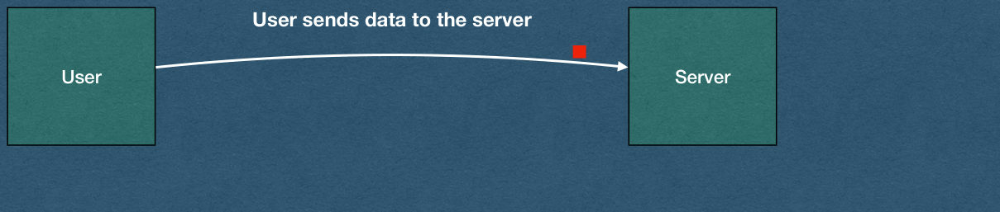
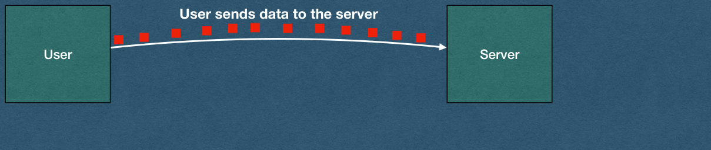

Buffering HTTP Requests
CSE312 — Web Development
Buffers
TCP Reminder
- TCP creates a persistent connection
- Bytes are streamed over this connection
- Data can be sent and received until one side closes the connection
- With small GET requests
- Read from the TCP socket once to read the entire request
Buffering File Uploads
- To read an HTTP request:
- First, read data from the TCP socket
received_data = self.request.recv(2048)
POST /form-path HTTP/1.1
Content-Length: 746
Content-Type: multipart/form-data; boundary=----WebKitFormBoundarycriD3u6M0UuPR1ia------WebKitFormBoundarycriD3u6M0UuPR1ia
Content-Disposition: form-data; name="commenter"Jesse
------WebKitFormBoundarycriD3u6M0UuPR1ia
Content-Disposition: form-data; name="upload"; filename="discord.png"
Content-Type: image/png<bytes_of_the_file>
------WebKitFormBoundarycriD3u6M0UuPR1ia--Buffering File Uploads
- Call the receive method with an int
- The value of this int is the maximum number of bytes that will be read from the TCP socket
received_data = self.request.recv(2048)
POST /form-path HTTP/1.1
Content-Length: 746
Content-Type: multipart/form-data; boundary=----WebKitFormBoundarycriD3u6M0UuPR1ia------WebKitFormBoundarycriD3u6M0UuPR1ia
Content-Disposition: form-data; name="commenter"Jesse
------WebKitFormBoundarycriD3u6M0UuPR1ia
Content-Disposition: form-data; name="upload"; filename="discord.png"
Content-Type: image/png<bytes_of_the_file>
------WebKitFormBoundarycriD3u6M0UuPR1ia--Buffering File Uploads
- What if we receive a fairly large POST request?
- Might not be able to read the entire request in one read from the socket
received_data = self.request.recv(2048)
POST /form-path HTTP/1.1
Content-Length: 91320
Content-Type: multipart/form-data; boundary=----WebKitFormBoundarycriD3u6M0UuPR1ia------WebKitFormBoundarycriD3u6M0UuPR1ia
Content-Disposition: form-data; name="commenter"Jesse
------WebKitFormBoundarycriD3u6M0UuPR1ia
Content-Disposition: form-data; name="upload"; filename="flamingo.jpg"
Content-Type: image/jpeg<bytes_of_the_file>
------WebKitFormBoundarycriD3u6M0UuPR1ia--Buffering File Uploads
- What if a very large file is uploaded?
received_data = self.request.recv(2048)
POST /form-path HTTP/1.1
Content-Length: 1884206
Content-Type: multipart/form-data; boundary=----WebKitFormBoundarycriD3u6M0UuPR1ia------WebKitFormBoundarycriD3u6M0UuPR1ia
Content-Disposition: form-data; name="commenter"Jesse
------WebKitFormBoundarycriD3u6M0UuPR1ia
Content-Disposition: form-data; name="upload"; filename="hq_image.png"
Content-Type: image/png<bytes_of_the_file>
------WebKitFormBoundarycriD3u6M0UuPR1ia--Buffering File Uploads
- When we call receive in this example, we read at most 2048 bytes from the connection
- We could increase this value, but there’s no guarantee that al the bytes will be ready when we call receive
received_data = self.request.recv(2048)
POST /form-path HTTP/1.1
Content-Length: 1884206
Content-Type: multipart/form-data; boundary=----WebKitFormBoundarycriD3u6M0UuPR1ia------WebKitFormBoundarycriD3u6M0UuPR1ia
Content-Disposition: form-data; name="commenter"Jesse
------WebKitFormBoundarycriD3u6M0UuPR1ia
Content-Disposition: form-data; name="upload"; filename="hq_image.png"
Content-Type: image/png<bytes_of_the_file>
------WebKitFormBoundarycriD3u6M0UuPR1ia--Buffering File Uploads
- We Must read from the socket multiple times!
received_data = self.request.recv(2048)
POST /form-path HTTP/1.1
Content-Length: 1884206
Content-Type: multipart/form-data; boundary=----WebKitFormBoundarycriD3u6M0UuPR1ia------WebKitFormBoundarycriD3u6M0UuPR1ia
Content-Disposition: form-data; name="commenter"Jesse
------WebKitFormBoundarycriD3u6M0UuPR1ia
Content-Disposition: form-data; name="upload"; filename="hq_image.png"
Content-Type: image/png<bytes_of_the_file>
------WebKitFormBoundarycriD3u6M0UuPR1ia--Buffers
- TCP socket libraries will use buffers
- No matter your language/library you will have a method/ function that reads bytes from the socket
- Called when there are bytes that arrive over the socket
- Returns some bytes of the request
User sends data to the server
User
Server

Buffer Questions
- What happens when the user has a lot of data to send?
- What if the user has a slow connection?
- Does the socket server wait for all of the data to be received before calling your code?
- What if the data takes an hour to send?
- What if the data contains streaming video that never ends?
User sends data to the server
User
Server

Buffer Answer
- The socket notifies your code when there is data to read - even if it’s not the entire request
- The socket server will have a buffer size, typically a few kB, and will read at most that many bytes in a single call
- For GET requests the entire request is smaller than the buffer (Safe assumption in this course)
User sends data to the server
User
Server

Buffers
- Now that we’re handling file uploads, we must be aware of these buffers
- The server will need data that persists across multiple calls that read bytes from a socket
- Create data structures that store the bytes read from a request
- Combine the bytes from multiple calls to receive the entire file
User sends data to the server
User
Server

HTTP Buffers
- When receiving a large HTTP request:
- Read bytes from the socket
- Parse the headers
- Find the Content-Length header and store this value
- Keep reading bytes from the stream until you have read Content-Length after the first “
\r\n\r\n” - Process the request
Assumptions
- Assumptions you may make on the Homework:
- The first read from your buffer will contain all the headers of the HTTP
- If you’re not currently buffering, you can safely parse the first bytes as the headers of the request (up to the first “
\r\n\r\n”) - This allows you to read the Content-Length
- If you’re not currently buffering, you can safely parse the first bytes as the headers of the request (up to the first “
- We will test with files larger than your TCP buffer size
- ie. Do not do this:
received_data = self.request.recv(1048576)
Buffers
- Remember that the Content-Length does not include the bytes for the headers
- ie. The total number of bytes read for one request will be larger than the Content-Length